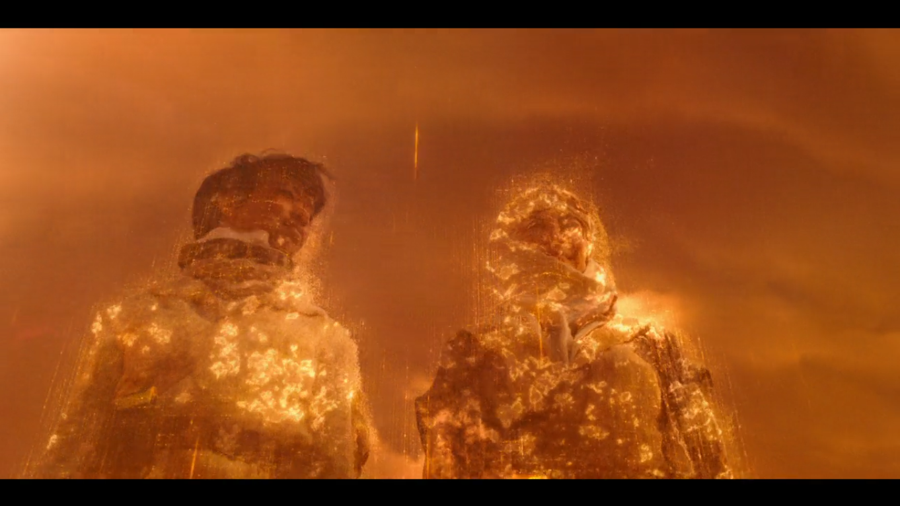
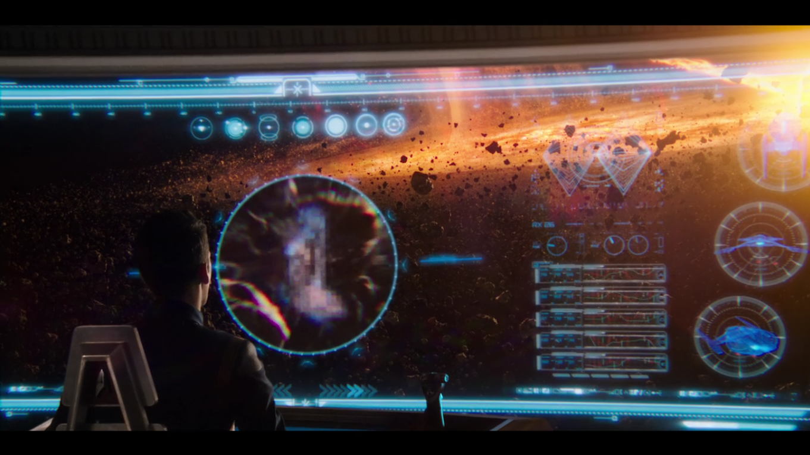
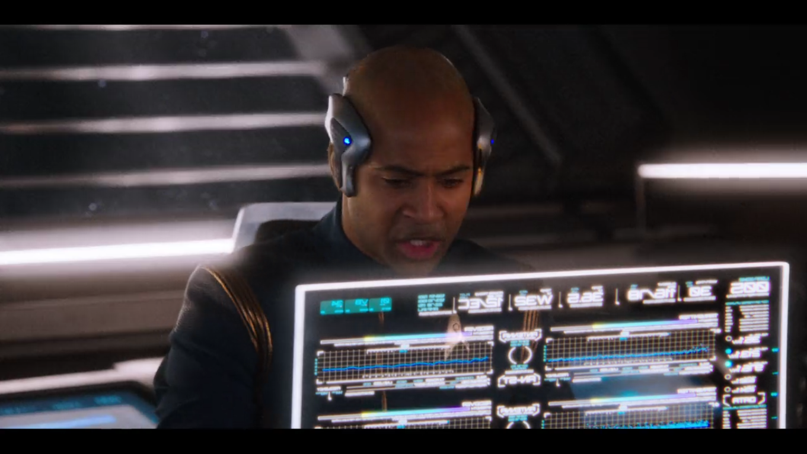
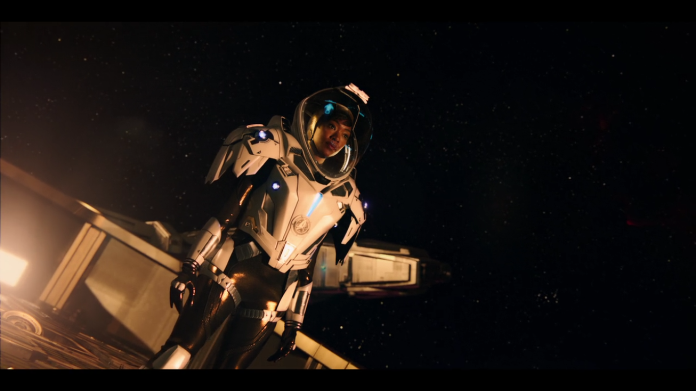
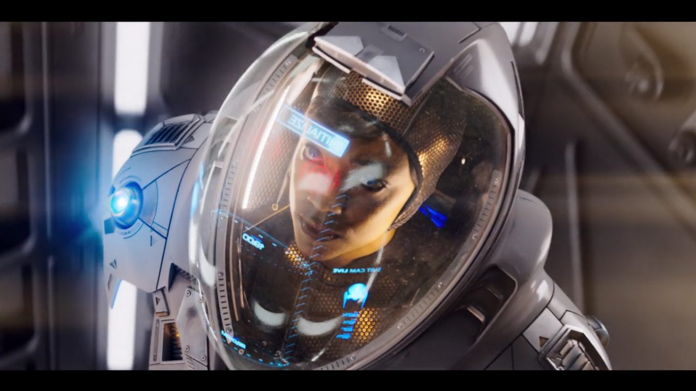
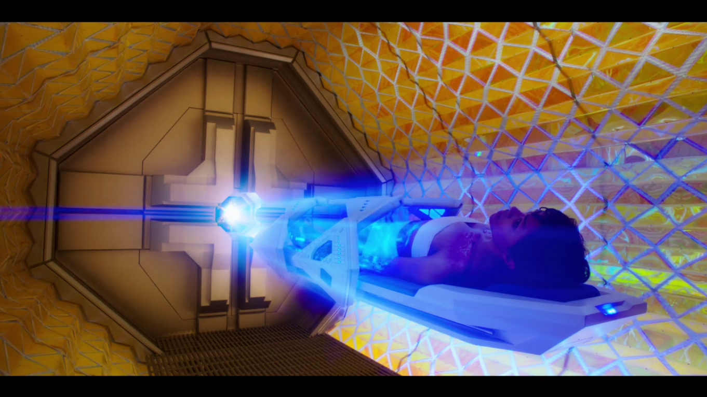
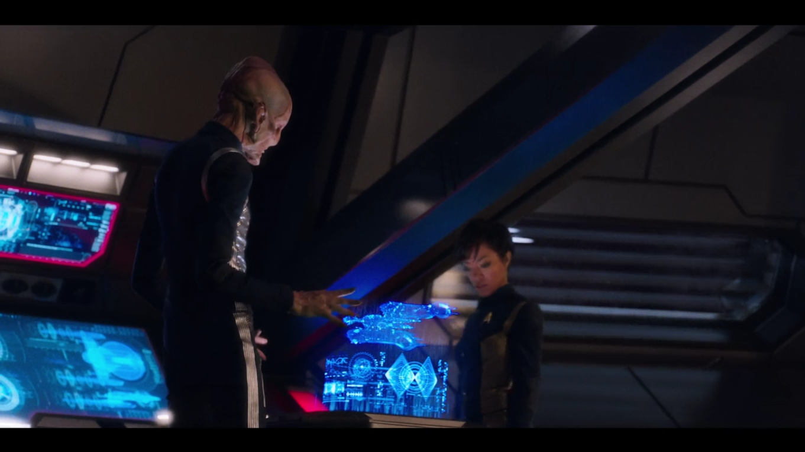
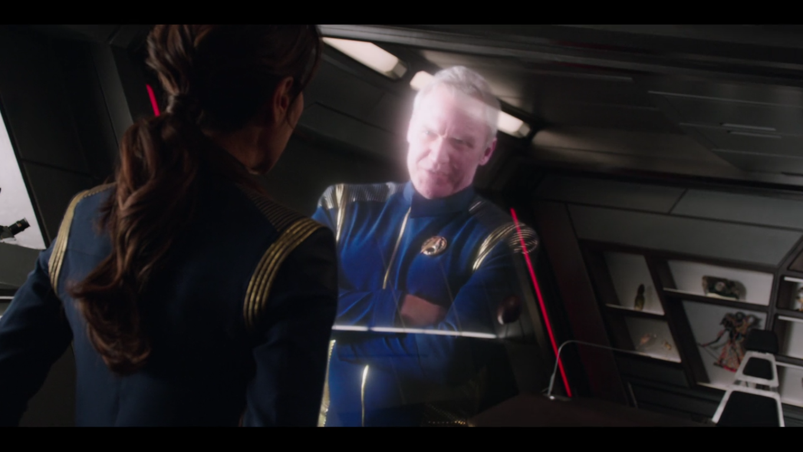
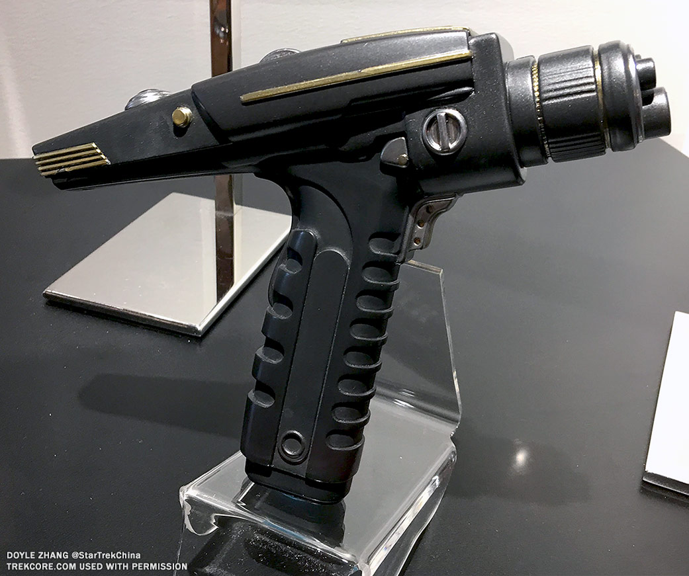

Necesidades
A lo largo de la serie, se presentarán diversas necesidades en cada aventura que vivan los tripulantes de la nave Discovery en su misión de explorar el universo, desde algo tan sencillo como analizar los territorios explorados hasta defenderse ante enemigos hostiles.
A continuación, se desarrollan casos concretos de diferentes tecnologías que aparecen en el primer capítulo de la serie junto a una breve explicación donde se indican las necesidades cubiertas por estos aparatos.
Dispositivo (Interfaz/tecnología):
Transportador
Primera Aparicion:
05:49
Necesidad:
El Transportador proporciona a los tripulantes de la nave USS Discovery una manera rápida de moverse de un sitio a otro de manera prácticamente inmediata. Ésto les permite escapar de situaciones peligrosas al volver a la seguridad de la nave de forma rápida.

Dispositivo (Interfaz/tecnología):
Pantalla Transparente
Primera Aparicion:
8:44
Necesidad:
La principal necesidad que cubre esta tecnología es la de poder ver información generada con el ordenador de la nave sin dejar de prestar atención a lo que hay delante de la nave en todo momento, permitiendo, por ejemplo, mostrar la distancia a ciertos obstáculos así como otros datos relevantes para tripulación que se encuentra en el puente de mandos.
Tambíen se emplea en otro tipo de pantallas de la nave y en los trajes espaciales.


Dispositivo (Interfaz/tecnología):
Traje Espacial
Primera Aparicion:
12:49
Necesidad:
La función principal del traje especial es bastante similar a los trajes espaciales de hoy en día, es decir, permitir a un ser humano sobrevivir en el espacio. Este traje en particular, proporciona mayor protección ya que es más parecido a una armadura. Además, tiene un sistema de propulsión, unas botas especiales para adherirse a la nave y permite visualizar información en el visor empleando la tecnología anteriormente citada.


Dispositivo (Interfaz/tecnología):
Máquina de Curación
Primera Aparicion:
23:08
Necesidad:
En muchas de las misiones, la tripulacón puede encontrarse con fenómenos adversos o con algún tipo de enemigo y puede que alguno sufra lesiones. Para tartar estas lesiones, la nave USS Discovery está equipada con una especie de máquina médica parecida a un scanner que permite tratar todo tipo de lesiones.

Dispositivo (Interfaz/tecnología):
Hologramas
Primera Aparicion:
30:26
Necesidad:
Los Hologramas permiten visualizar elementos en 3 dimensiones como una nave enemiga o la superficie de un planeta que esté documentado. También se emplea para mantener conversaciones con otras personas que no estén el el mismo lugar de manera un poco más próxima a tener una conversación en persona.


Dispositivo (Interfaz/tecnología):
Phaser
Primera Aparicion:
40:23
Necesidad:
El phaser tiene dos modos de operacion diferentes. En el primer modo, actuá como un arma de energía que causa una gran cantidad de daño. En el Segundo modo, los disparos del arma no son mortales, en su lugar, aturden al objetivo al que impacta durante unos minutos.

Varias de las tecnologías presentadas en el capítulo ya se encuentran disponibles hoy en día, aunque sea una versión no tan avanzada como las que se plantean en la serie o incluso algún prototipo que pudiera llegar a producirse en masa y por lo tanto, a integrase en la vida cotidiana de las personas.
A pesar de esto, la serie plantea un futuro muy distante por lo que aparecen también muchos elementos que son muy avanzados para el punto en el que está la tecnología actualmente.
También hay que tener en cuenta, que, aunque el año de producción de esta serie sea 2017, los eventos de la misma tienen lugar en un marco temporal muy cercano al de la serie original de Star Trek (producida en 1966) por lo que aparecen elementos como el comunicador((ref)) que en esa época eran novedosos y ahora no lo son pero aparecen en la serie de Star Trek Discovery para mantener una continuidad respecto al resto de obras pertenecientes al universo Star Trek.
Tecnologías disponibles en el momento de la producción
La mayor parte de los elementos mostrados tienen un símil con algún elemento tecnológico desponible en en año de producción. Por ejemplo, el ser humano dispone de trajes espaciales que permiten a un humano aguantar las condiciones del espacio exterior desde su primera aparición en 1961 (traje SK-1 llevado por Yuri Gagarin) [1].
También se encontraban disponibles diversas máquinas que permiten captar imágenes del interior del cuerpo de una persona [2], aunque en este caso, no son capaces de reparar lesiones
Hay que destacar también las pistolas taser [3]que permiten aturdir a una persona sin llegar a matarla mediante la utilización de descargas eléctricas. El ejército de los EEUU también trabaja en armas que dejen sin vision al enemigo durante unos instantes.
Por ultimo, varias empresas ya están trabajando en el desarrollo de pantallas completamente transparentes y flexibles [4][5]como las que se pueden ver en la serie.
Tecnologías imaginadas en el momento de la producción
La idea del transportador tiene su origen en la serie original de Star Trek y, a pesar de que han pasado más de 50 años, todavía no hay ningún avance que se le parezca siquiera. La idea de poder moverse de un lugar a otro de forma casi instantánea se concibe como casi imposible con los avances tecnológicos de hoy en día. Además, disponer de esta tecnología con un rango similar al que aparece en la serie (entre 3000 y 40000) [6]supondría probablemente el mayor avance de la historia en transportes.
La máquina de curación presentada anteriormente presenta características que serían imposibles de llevar a cabo con la tecnología de hoy en día como que pueda tratar cualquier tipo de lesión sin necesidad de medicamentos o una intervención quirúrgica (actualmente si hay algunas lesiones que se pueden tartar de una forma no intrusiva [7]).